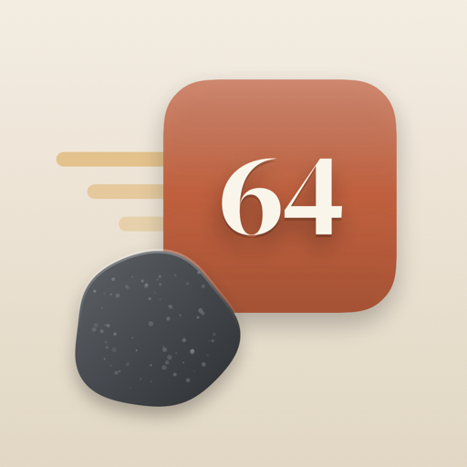

Tallystone
Stone-split logic puzzles
Tallystone is a calm logic puzzle about planning, not luck. Every board starts with a handful of numbered tiles and fixed dark stones. Swipe and every tile slides at once; equal tiles that meet merge into one. Stones never move and never merge, splitting a row or column into separate lanes. Finish with a single numbered tile.
No new tiles ever spawn. Every puzzle has a proven shortest route (par) computed by exhaustive search. When you finish a board, Tallystone displays your route alongside the shortest route arrow by arrow, and lets you replay the shortest route directly on the board.
- 60 handcrafted puzzles across five chapters, from open boards to quarries with three stones
- 120 daily stone puzzles — the same board for everyone each day, with a local streak counter
- Solver-backed hint showing the best next move and remaining distance, plus dead-end detection
- Free undo; light and dark appearance; English, Turkish, German, Spanish, French and Japanese
Tallystone is free with ads. A single one-time purchase, Tallystone Pro, removes all ads permanently. Progress stays on your device.
Taşlarla bölünmüş mantık bulmacası
Tallystone, şansın hiç olmadığı sakin bir planlama bulmacasıdır. Her tahta belirli sayıda numaralı taş ve sabit koyu taşlarla başlar. Kaydırdığınızda tüm sayılar aynı anda hareket eder; karşılaşan eşit sayılar birleşir. Koyu taşlar hareket etmez ve birleşmez; satırları iki ayrı yola böler. Amaç tahtada tek bir sayı bırakmaktır.
Tahtaya asla yeni sayı eklenmez. Her bulmacanın kapsamlı arama ile kanıtlanmış en kısa çözümü (par) vardır. Bulmacayı bitirdiğinizde kendi hamle dizinizi en kısa yolla adım adım karşılaştırabilir ve en kısa çözümü tahtada oynatabilirsiniz.
- Beş bölümde toplam 60 bulmaca ve 120 günlük taş bulmacası
- Kalan en kısa hamleyi gösteren çözücü ipucu ve çıkmaz tespiti
- Ücretsiz geri alma; açık ve koyu görünüm; Türkçe, İngilizce, Almanca, İspanyolca, Fransızca ve Japonca
Tallystone reklamlarla ücretsizdir. Tek seferlik Tallystone Pro satın alımı tüm reklamları kalıcı olarak kaldırır. İlerlemeniz yalnızca cihazınızda saklanır.